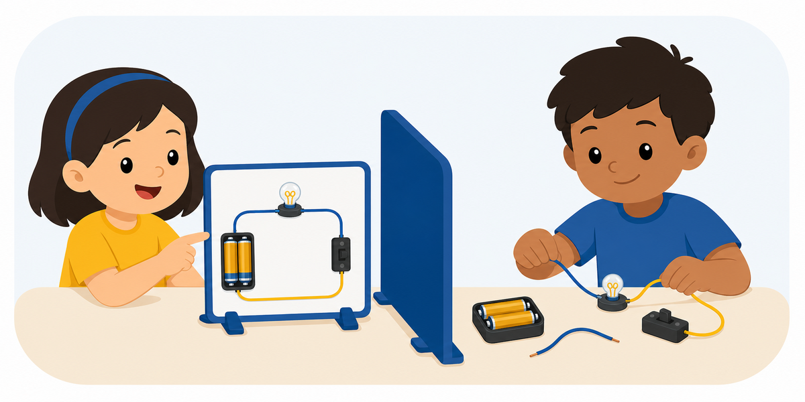

Activity 77 ·
Circuit Description Challenge

Materials Safe circuit components or circuit-symbol cards.
What to describe
The Describer views a simple circuit and explains the connections. The Builder assembles or diagrams it.
Roles
How a round works
Make it harder or easier
Harder
Give the entire algorithm up front as numbered steps; no live questions or corrections.
Easier
Allow the Builder to confirm and act on one instruction at a time.
Reflect
Skills
Standards & alignment
TEKS Technology Applications / CS TEKS · algorithms & precise instructions; Science SEPs where applicable (confirm grade code)
NGSS NGSS SEP-8: Obtaining, Evaluating & Communicating Information · 4-PS3-2 / 4-PS3-4: energy transfer in circuits